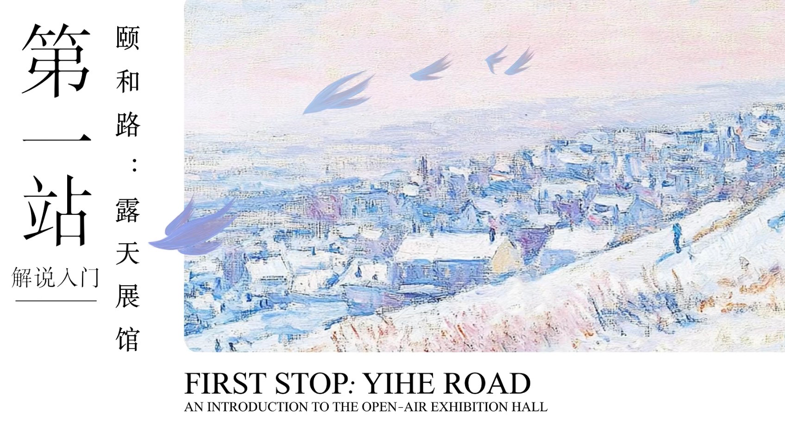
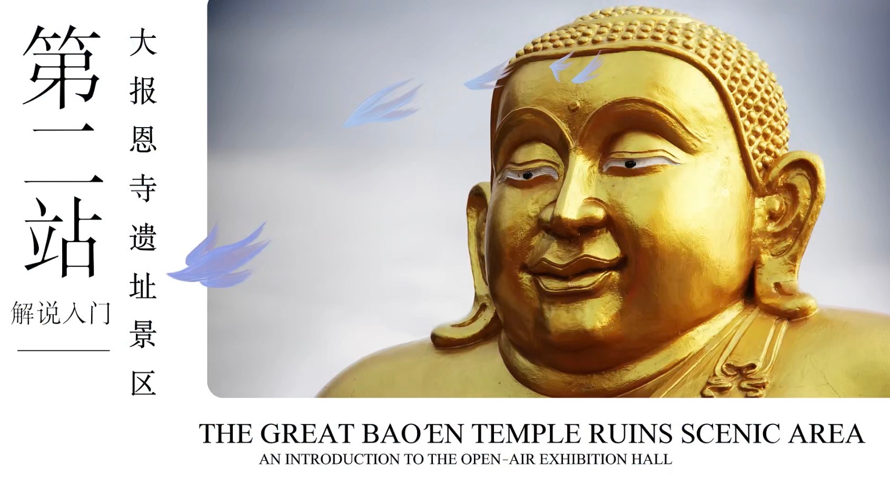
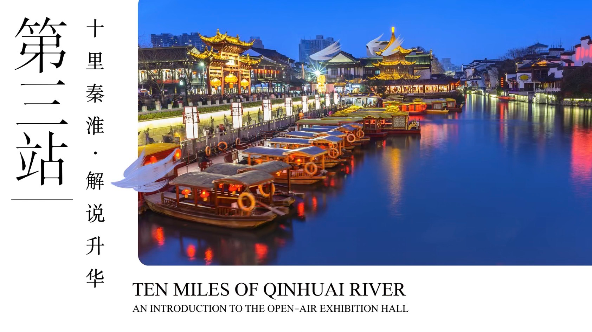

GROUP PROJECT · 05 / 2026
从历史街区到千年古刹，再到流淌着市井烟火的秦淮河畔， 以创意情节串联城市文化， 用年轻化的表达方式，开启一场南京文化漫游。
PROJECT OVERVIEW
《场馆解说十六分之一小分队》是一支以南京城市文化为主题的创意讲解视频， 围绕颐和路历史文化街区、大报恩寺遗址景区与十里秦淮景区展开， 尝试将城市历史、建筑景观与现场讲解结合， 以更轻松、年轻化的视听表达呈现南京的文化魅力。
01 — CREATIVE CONCEPT
视频以 AI 生成的亲子情节作为开场， 通过 Kimi 与金佛之间出人意料的对话制造趣味， 再由人物互动引出南京的文化景点。 随后，镜头转向真人出镜与实地讲解， 将轻松的剧情引入与真实的城市空间连接起来， 为传统景点介绍增加更具故事感的观看体验。
02 — MY CONTRIBUTION
作为小组成员，我负责颐和路部分的真人出镜讲解， 并参与视频文案创意与剪辑工作。 从现场讲解到整体视听内容的组织， 我尝试将播音主持专业训练与创意视频表达结合， 让文化介绍兼顾信息传达与观看体验。
03 — THE THREE DESTINATIONS
以三个各具气质的城市空间为线索， 串联南京的历史风貌、文化遗产与水岸生活， 让一次景点讲解成为一场有故事感的城市漫游。

从梧桐掩映的历史街区出发，感受南京城市风貌与人文记忆。

以千年古刹与金色佛像为线索，走近南京深厚的历史文化。

沿秦淮河畔走进灯火与市井之间，感受古都的烟火气息。